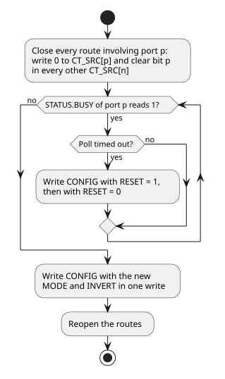
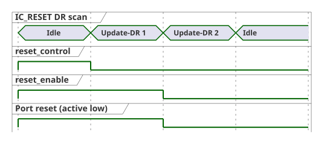

1. DTP Programming Guide
The Debug and Test Ports (DTP) are programmed from two sides: firmware or a debugger configures the cross-trigger network through its CSR window, and an external debugger drives the JTAG test access ports.
1.1. Cross-Trigger Network
Cross-trigger configuration is static. Software programs every external CTP from the SiP cross-trigger topology once per boot, then opens the CTM routes that use those ports, and leaves both unchanged for the rest of the session. Register offsets are relative to the CTN base address; the CTN address allocation table lists the CTM and CTP windows. Firmware and an external debugger share this window, and whichever of them programs cross triggers follows the sequence below.
1.1.1. Requirements
-
Both ends of a CTP link use the same protocol and polarity, and the board determines both:
-
A shared wire-OR line with pull-ups uses
MODE= 0 andINVERT= 0; with pull-downs it usesMODE= 0 andINVERT= 1. -
A point-to-point link with active-high signaling uses
MODE= 1 andINVERT= 0; with active-low signaling it usesMODE= 1 andINVERT= 1.
-
-
The configuration stays fixed for the session. Change a port whose routes are already open only through the sequence in Changing a Port’s Configuration.
-
After reset every CTP is in wire-OR mode with
INVERT= 0, and every CTM output is disabled because eachCT_DST_SELECTresets to zero. Until software writesCONFIG, a CTP drives neitherCT_Req_outnorCT_Ack_out, so the board pulls set the level the far end sees on those lines. Choose pulls that the far end reads as deasserted. -
Internal CTPs have no registers. The
INT_CT_MODEparameter fixes their protocol. -
The CTM configuration across the SiP is free of loops. A wire-OR CTP receives its own assertion of the shared wire, so a route from a wire-OR CTP back to the same CTP is a loop.
1.1.2. Initialization Sequence
-
For each external CTP
ithat the SiP uses:-
For a wire-OR port, write
STRETCH_MULTwith the pulse width the shared wire requires, minus one. -
Write
CONFIGwithMODEandINVERTfor the board in a single write, withRESET= 0.
-
-
For each CTM output
nthat carries triggers, writeCT_SRC[n].CONFIG_0.CT_DST_SELECT. Setting bitmforwards the triggers that portmreceives to portn. The CTM port index table maps port indices to external and internal CTPs.
The order matters. A CTM route delivers triggers to a CTP from the moment it
is written. A CTP still in its reset-default wire-OR mode transmits a trigger
by driving CT_Req_out to the asserted wire-OR level, which is low with
INVERT = 0. A point-to-point far end built for active-low signaling reads
that level as a request. Writing MODE and INVERT together keeps a port from
running, even briefly, with one field set for the board and the other still
at its reset value.
The following example configures external CTP 0 for an active-low point-to-point link and external CTP 1 for a wire-OR line with pull-ups, then routes triggers between them.
#define CTP_REG(i, reg) (ctn_base + CROSS_TRIGGER_NETWORK_CTP_BASE_ADDR(i) + (reg))
#define CTM_ROUTE(n) (ctn_base + CROSS_TRIGGER_NETWORK_CTM_BASE_ADDR + \
CROSS_TRIGGER_MATRIX_CT_SRC_CONFIG_0_BASE_ADDR(n))
#define CONFIG_MODE_P2P (1u << 0)
#define CONFIG_INVERT (1u << 1)
#define CONFIG_RESET (1u << 2)
// Configure every port before opening any route.
write32(CTP_REG(0, CROSS_TRIGGER_PORT_CONFIG_BASE_ADDR), CONFIG_MODE_P2P | CONFIG_INVERT);
write32(CTP_REG(1, CROSS_TRIGGER_PORT_STRETCH_MULT_BASE_ADDR), 15); // 16-cycle pulses
write32(CTP_REG(1, CROSS_TRIGGER_PORT_CONFIG_BASE_ADDR), 0);
// Triggers received on port 1 go out on port 0, and the reverse.
write32(CTM_ROUTE(0), 1u << 1);
write32(CTM_ROUTE(1), 1u << 0);1.1.3. Example SiP Routing
The TRM’s example SiP cross-trigger topology links six chiplets: Chiplets 0, 1 and 2 share a wire-OR line, and point-to-point pairs link Chiplet 0 with Chiplets 3 and 4, and Chiplet 3 with Chiplet 5. CTM programming for the example SiP lists the CTM routing that each chiplet programs for that topology. No route leads from a CTP back to itself.
| Chiplet | CTM forwarding |
|---|---|
0 |
From Chiplets 1 and 2 through the wire-OR CTP to the local CLAs and Chiplets 3 and 4. |
1 |
From Chiplets 0 and 2 through the wire-OR CTP to the local CLAs. |
2 |
From Chiplets 0 and 1 through the wire-OR CTP to the local CLAs. |
3 |
From Chiplet 0 to the local CLAs and Chiplet 5. |
4 |
From Chiplet 0 to the local CLAs. |
5 |
From Chiplet 3 to the local CLAs. |
1.1.4. Changing a Port’s Configuration
Changing CONFIG after routes are open is discouraged. When a link must
change protocol or polarity, for example after both chiplets agree on a new
topology, reconfigure port p as shown below. A poll that times out means
the point-to-point far end never acknowledged; recover the port as described in
Handshake Deadlock Recovery.

The CTP holds its point-to-point handshake idle while wire-OR mode is
selected. After point-to-point mode is selected, the handshake ignores
CT_Req_in and CT_Ack_in until their synchronized levels are valid.
Closing the routes first keeps triggers from being sent or forwarded while
the two ends of the link disagree.
1.1.5. Handshake Deadlock Recovery
A point-to-point sender waits for CT_Ack_in without a timeout. If the far
end stops responding, STATUS.REQ_OUT and STATUS.BUSY stay 1, and the port
transmits no further triggers.
-
Write
CONFIGwithRESET= 1, keepingMODEandINVERTunchanged.CT_Req_outdeasserts, and the port discards triggers delivered to it whileRESETis set. -
Write
CONFIGwithRESET= 0.
RESET does not affect the receiving side. A far end that holds CT_Req_in
asserted keeps STATUS.BUSY at 1 until it releases the request.
1.2. Debug Host Procedures
These procedures are performed by an external debugger through the chiplet’s JTAG port. An IR scan loads an instruction with the IR-Scan sequence; a DR scan shifts the selected test data register (TDR) with the DR-Scan sequence, least significant bit first. The TRM defines every instruction and TDR field.
1.2.1. Primary TAP Registers
To read or write a primary TAP TDR:
-
Shift its instruction into the instruction register with an IR scan.
-
Shift the TDR with a DR scan, starting with the least significant bit.
-
Read the TDR contents shifted out on TDO.
The TDRs differ in what the shifted-in bits do:
-
IDCODE and JTAG_CAPS are read-only. Shift in any pattern; the bits are ignored. Read JTAG_CAPS to discover which instructions and ports an instance enables before using them.
-
DEBUG_CONTROL captures the bits shifted into its read/write fields and ignores those shifted into its read-only fields.
-
Boundary scan instructions that select the boundary-scan registers shift their contents out on TDO. An instruction disabled in the instance behaves as BYPASS.
The DEBUG_CONTROL fields table and the JTAG_CAPS fields table define the fields.
1.2.2. Running BIST
The PTAP adds no scan cell of its own to the RUNBIST path, so the attached iJTAG network defines the length and contents of the RUNBIST DR.
-
Shift RUNBIST into the instruction register with an IR scan.
-
Shift the configuration vector that the attached iJTAG network defines for reaching the BIST TDR with a DR scan. A hierarchical network needs one DR scan for each level of Segment Insertion Bits (SIBs) opened on the way.
-
Shift the BIST TDR contents, together with the bits of every SIB and register still on the scan path, with a DR scan.
-
Read the captured contents of the same scan path on TDO.
1.2.3. iJTAG Segment Access
The JTAG Interface Unit’s iJTAG network starts with three one-bit SIBs. With every SIB closed the DR is three bits long: bit 0 (nearest TDO, shifted in first) is the DFD SIB, bit 1 the DFT Non-Secure SIB and bit 2 the DFT Secure SIB. A SIB whose debug-disable field is set stays closed and captures 0.
-
Shift SELECT_IJTAG, or RUNBIST to run BIST, into the instruction register with an IR scan.
-
Open the target SIB with a three-bit DR scan:
3’b100for DFT Secure,3’b010for DFT Non-Secure or3’b001for DFD. The target SIB’s debug-disable field must be clear. -
Shift the lengthened DR with the target SIB’s bit held at 1. With the DFT Non-Secure SIB open and an N-bit segment, the DR is N + 3 bits long: bit 0 is the DFD SIB, bits N to 1 are the segment with the bit nearest its scan output at bit 1, bit N + 1 is the DFT Non-Secure SIB and bit N + 2 is the DFT Secure SIB. The network attached to each segment defines its contents and length.
-
Read the captured contents of the same scan path on TDO.
-
Close the SIB by shifting the same DR with the target SIB’s bit at 0.
The iJTAG network description gives the SIB bit map and segment ports.
1.2.4. IC_RESET Overrides
Each IC_RESET port has an active-low reset_control value and a reset_enable
select that is also active low: writing 0 hands the port to reset_control.
Consumers select between the functional reset and reset_control with a
hazard-free multiplexer, which holds its output only while the select moves
alone. To assert an override:
-
Shift IC_RESET into the instruction register with an IR scan.
-
Write the port’s
reset_controlwith a DR scan, leavingreset_enableat 1. -
Clear
reset_enablein a second DR scan, so that its Update-DR moves only the select.

Changing both in one Update-DR can pulse a reset on a port that neither source
is resetting. Write reset_hold to 0 to keep the override asserted across
Test-Logic-Reset; only TRST clears reset_hold itself. The
IC_RESET override description
gives the TDR slice order.
1.2.5. SEP Reset Vector Redirect
The SEP CPU reset vector is held in a TDR of the EL2 debug TAP, reached through the SEP Core Debug STAP. To start the SEP CPU from a memory other than the Boot ROM for bring-up or failure analysis:
-
Hold the SEP CPU in reset, for example with the SEP main-reset IC_RESET override (IC_RESET Overrides).
-
Select the reset-vector TDR with JTAG instruction opcode
0x18and shift in the alternate address. The TDR stores address bits [31:1]; bit 0 is zero. -
Release the reset.
The value persists until it is rewritten or the TAP is reset (TRST or Test-Logic-Reset); CPU reset alone does not restore the Boot ROM default.
1.2.6. SMC Debug Module Abstract Command Errors
The SMC Debug Module departs from the RISC-V External Debug Support
specification: a command write while abstractcs.cmderr is nonzero replaces
the stored command, and no abstract command executes until cmderr is cleared.
A debugger therefore:
-
Reads
abstractcsto capture the error code of a failed command before it writescommandagain. -
Clears
cmderrby writing 1s to the field and confirms that it reads 0 before issuing the next command.
The SMC Debug Module description gives the full write behavior.